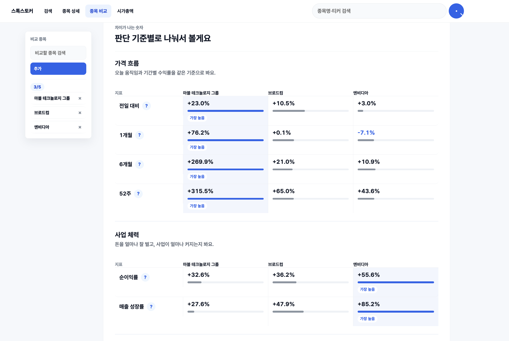

스톡스토커 · 주식 분석 서비스 · 출시 후 1주일 간
01
0
종목 조회
D1D2D3D4D5D6D7
김기범 — Product Owner / Service Planner
문제를 끝까지 해체하고 솔루션을 만들어냅니다. 검증과 실행이 가능한 AI Workflow를 설계합니다.
01 / 03
01 / PROOF BY NUMBERS
아이디어를 문서로 정리하는 데서 멈추지 않고, AI로 프로토타입을 빠르게 만들었습니다. 사용자 반응과 운영 맥락을 다시 반영하며, 문제 정의부터 실행까지 이어가는 방식으로 일해왔습니다.
자체 테이스팅 노트로 600여 명 MVP를 운영하며 니즈, 가격, 제휴 가능성을 현장에서 검증했습니다.
02 / AI-NATIVE STACK
OpenAI Codex, Claude Code, Obsidian, LLM Wiki, Hermes Agent, OpenClaw를 하나의 작업 루프로 묶어 문제정의, 구현, 검증, 기록까지 밀어붙입니다.
메인 툴입니다. 다양한 스킬을 직접 만들어 사용 중이며, MCP를 활용해 웹 ChatGPT와 연결시켜 리서치 등을 수행합니다. 필요에 따라 서브에이전트를 가동해 병렬 작업을 진행합니다.
OpenClaw, Hermes의 두뇌 역할을 맡습니다. 오케스트레이터로서 중요한 판단과 지시를 진행하며, 메신저와 연결시켜 언제든 작업 대기 상태입니다.
LLM Wiki를 시각적으로 확인합니다. 끊임없이 저와 함께 성장하며, 어느 환경에서든 컨텍스트를 잃지 않고 작업 스타일을 유지합니다.
제 작업 방식, 프로젝트 맥락, 판단 기준을 계속 축적하는 지식 베이스입니다. Codex, Claude, Hermes가 같은 기준으로 움직이도록 컨텍스트를 공급합니다.
Self-improving Agent입니다. 현재는 이를 커스텀하여 저에게 맞는 에이전트를 직접 성장시키며, 저 또한 함께 배워나가고 있습니다.
Codex CLI와 연결하여, 제 작업 분야 혹은 관심사에 대해 24시간 리서치를 진행합니다. 특히 AI 관련 뉴스, 논문, 레포 등을 조사하며 배우는 Growth Center 역할을 합니다.
04 / SELECTED WORK

대학·지자체 3D 프린터는 있었지만, 실제 운용률은 매우 낮았습니다.
자연어를 길이, 위치, 각도 같은 수정 가능한 수치로 바꿔 CAD에 반영했습니다.


months / 2025.05—2026.04
외국인 · 통역사 · 병원 · 관리자
월 매출 8억 규모 업체에 납품



05 / MORE EVIDENCE
INTERNAL PROPOSAL · 2026
테이스팃에서 검증한 취향·리뷰 큐레이션을 회사 내부 신규 프로젝트로 제안했습니다. 유저 시나리오, 일부 디자인, 개발 매니징, GA4 이벤트를 맡았습니다.


인테리어 폐자재 거래·배송 서비스. 현장 조사부터 Android MVP, PoC, 매출, 정부지원까지 경험했습니다.
수입주류 취향 데이터 기반 큐레이션 서비스. 설문과 인터뷰를 반복하며 시장 반응을 검증했습니다.
06 / INTERX FIT
모르는 도메인을 익힐 때마다 요구사항, 데이터 흐름, 사용자 판단 기준, QA 기준을 문서와 화면으로 남겨왔습니다. 빠르게 배우되 배운 것을 팀이 재사용할 수 있는 제품 기준으로 바꾸겠습니다.
Codex, Claude, ChatGPT를 리서치, 문서화, 구현 검증에 연결해 문제 정의부터 화면과 QA까지 빠르게 좁힙니다.
StockStalker 단독 출시, Zaturi MVP, Ireh Link PM처럼 기획, 디자인, 개발 핸들링, 배포와 운영 개선을 경험했습니다.
제조 도메인은 새로 배우되 주식, 의료관광, CAD처럼 낯선 데이터를 요구사항, 정책, Dashboard로 빠르게 고정합니다.
AI에 누구보다 자신있습니다.
압도적 실행력과 꼼꼼함, 그리고 문제에 대한 집요함으로
팀에 기여하겠습니다.